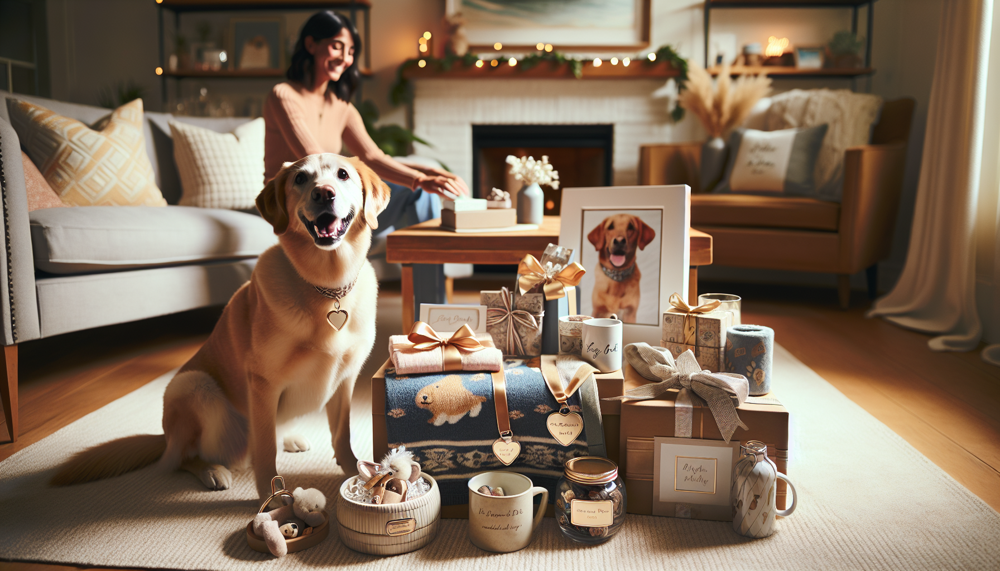

Finding the perfect present for a dog lover does not have to mean spending a fortune. In fact, some of the most meaningful gifts are the ones that feel personal, thoughtful, and tailored to the bond between a pup and their favorite human. If you are searching for the best personalized dog gifts under $50, you are in the right place.
Whether you are shopping for a birthday, holiday, adoption anniversary, Mother’s Day, Father’s Day, or just because, personalized pet gifts add that extra-special touch. They show you went beyond a generic purchase and chose something designed with one specific dog in mind. Better yet, there are plenty of affordable options that look premium without blowing your budget.
From custom accessories and home decor to practical everyday items with a personal twist, this guide rounds up some of the best budget-friendly personalized dog gifts that pet parents will genuinely appreciate. If you want a gift that is sweet, memorable, and useful, these ideas are a great place to start.
Dog lovers are passionate about their pets, and that is exactly why personalized gifts work so well. A custom item featuring a dog’s name, photo, breed, or unique personality feels instantly more meaningful than something off the shelf. It celebrates the pet as part of the family.
Another reason these gifts are so popular is versatility. Personalized dog gifts can be cute, practical, decorative, or sentimental. You can find something for nearly every style and occasion, whether the recipient prefers cozy home items, stylish walk accessories, or keepsakes they can display proudly.
Even better, many handmade and small-business options on platforms like Etsy offer beautiful customization at accessible price points. That means you can support creative makers while finding a one-of-a-kind gift under $50.
A personalized dog bandana is one of the easiest and cutest gifts you can give. It is affordable, wearable, and perfect for photos. Many custom bandanas can be personalized with a dog’s name, a fun phrase, or seasonal designs, making them ideal for holidays, birthdays, or everyday style.
Bandanas are especially great because they suit dogs of all sizes and personalities. Some pups look adorable in classic plaid, while others shine in playful prints or minimalist modern styles. Since many handmade bandanas are priced well under $25, they are also an excellent choice if you want something meaningful without stretching your budget.
For gift shoppers, this is a smart pick because it feels festive and special right away. It is also easy to pair with another small item, like treats or a toy, to create a complete gift set under $50.
If you want a gift that combines everyday usefulness with heartfelt customization, engraved pet tags are a fantastic option. A high-quality personalized tag can include the dog’s name, contact information, and sometimes even a cute symbol or custom message. It is one of those gifts that pet owners truly use every day.
There are so many stylish options available now, from classic metal tags to modern acrylic, enamel, and minimalist designs. Some tags even come in themed shapes like bones, hearts, or circles, allowing you to match the dog’s personality.
Because personalized pet tags are generally budget-friendly, usually ranging from $10 to $30, they make a practical gift that still feels special. They are ideal for new puppy parents, recent adopters, or anyone whose dog deserves an accessory upgrade.
Tip for gift-giving: choose a tag style that matches the dog’s collar color or the owner’s aesthetic. That little detail makes the gift feel even more curated.
Dog treats are a daily part of life for many pet parents, so why not make treat storage more fun? Personalized treat jars are a charming gift idea that blends function and decor. They can be customized with the dog’s name, breed illustration, or a playful phrase, and they look great on kitchen counters, coffee bars, or pantry shelves.
This kind of gift is especially appealing for pet owners who love home organization and coordinated decor. A custom treat jar feels polished and thoughtful while still being useful. It is one of those items people might not buy for themselves, which makes it even better as a gift.
Many personalized treat containers fall under the $50 mark, especially smaller ceramic, glass, or metal designs. Pair one with gourmet dog treats, and you have a gift that feels complete, personal, and delightfully practical.
For the dog mom or dog dad who starts every morning with coffee or tea, a personalized dog mug is an easy win. These mugs can feature the dog’s name, breed, custom illustration, or even a pet photo. Every sip becomes a little reminder of their favorite furry companion.
Custom mugs are popular for a reason: they are affordable, useful, and highly giftable. They work well for birthdays, holidays, coworkers, friends, and family members. If you know someone who talks about their dog nonstop, a mug with their pup’s face or name is almost guaranteed to make them smile.
Most personalized mugs are available for under $30, leaving room in your budget to add coffee, tea, or a matching coaster. If you want a present that is sweet without being overly complicated, this is a dependable choice.
If you are looking for a gift with a more sentimental feel, a custom pet portrait print is one of the best personalized dog gifts under $50. These prints can range from realistic illustrated portraits to whimsical, modern, or even regal styles. Some artists create digital downloads at lower price points, making them especially budget-friendly.
Pet portraits are wonderful because they turn a beloved dog into art. They can commemorate a puppy’s first year, celebrate a rescue dog, or simply capture the joy a pet brings to the home. This type of gift often feels more emotional than a standard accessory, which makes it perfect for close friends, partners, or family members.
To keep it under budget, consider unframed prints or digital files that the recipient can print themselves. You still get the custom, meaningful effect without going over $50.
Daily walks are a huge part of dog ownership, which makes personalized walk accessories another thoughtful and affordable gift category. Think monogrammed leash pouches, custom poop bag holders, personalized leash wraps, or name-embroidered accessories that make everyday outings more stylish and organized.
These gifts are especially useful for active dog owners who are always on the go. A personalized leash accessory adds convenience while still feeling unique. It also shows that you thought about the recipient’s lifestyle, not just their dog’s appearance.
Many handmade sellers offer these items in coordinated colors and durable fabrics, so you can find something that feels both functional and elevated. Price-wise, they often range from $15 to $40, making them an easy fit for your budget.
If you want a gift that is less decorative and more practical, this is an excellent direction to go.
With so many options available, the best gift often comes down to the recipient’s personality and daily routine. Ask yourself a few simple questions before buying. Do they love home decor? Are they always taking photos of their dog? Do they prioritize practical items? Are they sentimental about keepsakes?
It also helps to think about the dog. Consider their size, style, and energy level. A playful pup might suit a custom bandana, while a very active dog owner may appreciate walk accessories more. If the recipient loves showing off their pet at home or work, a mug or portrait print could be the perfect fit.
Here are a few quick tips for choosing wisely:
One of the best things about shopping for personalized dog gifts is that you do not need a huge budget to make a big impression. Under $50 opens the door to so many creative, heartfelt, and useful options that feel far more special than generic pet store finds.
A custom dog bandana, engraved tag, personalized treat jar, pet parent mug, portrait print, or monogrammed walk accessory can all deliver that wow factor while staying affordable. These gifts celebrate the joy dogs bring into our lives and help pet owners feel seen, understood, and appreciated.
When a gift reflects a specific dog’s name, face, or personality, it instantly becomes more memorable. That is what makes personalized pet products such a smart choice for birthdays, holidays, and everyday surprises.
If you are ready to find a gift that is personal, charming, and budget-friendly, shop personalized pet products at SnoutAndAbout on Etsy.